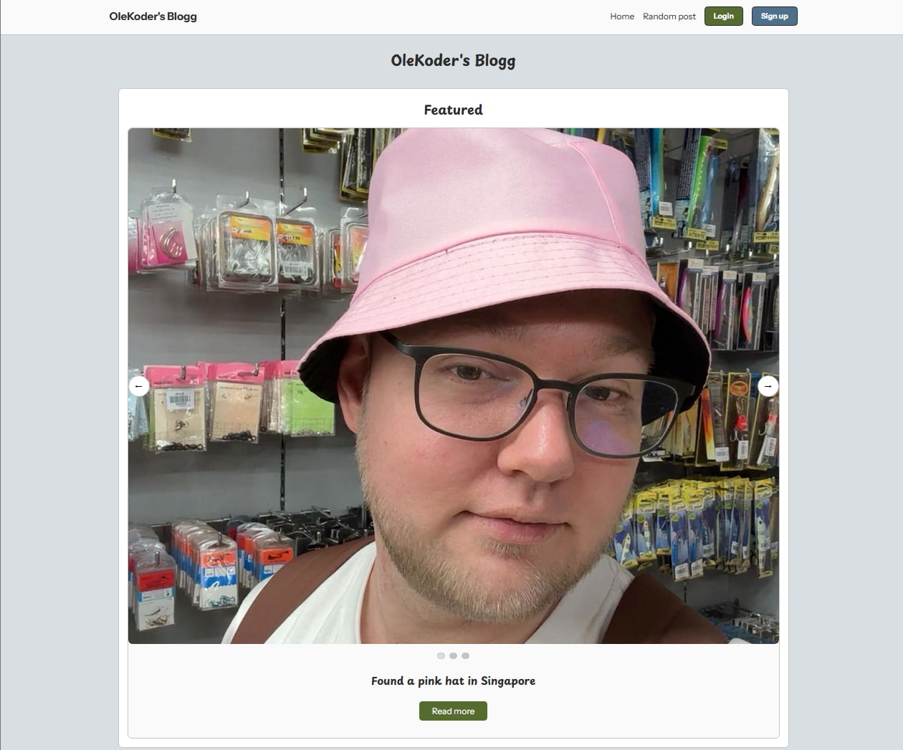
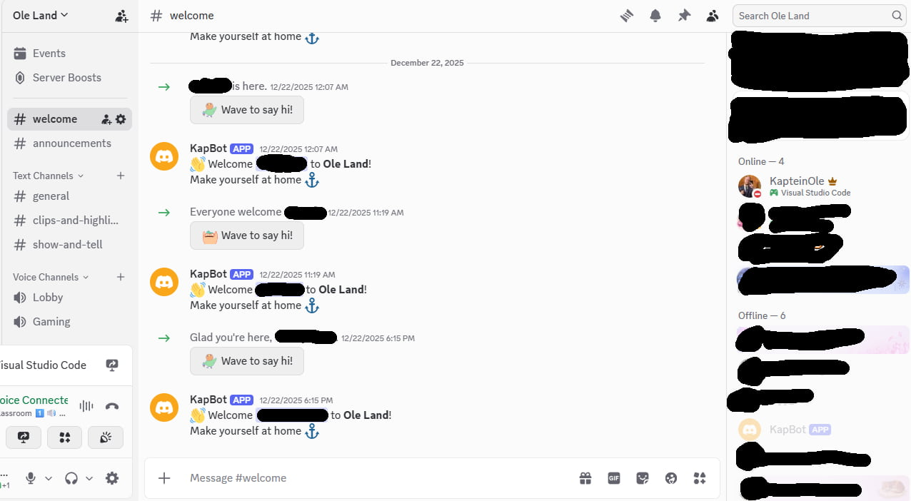
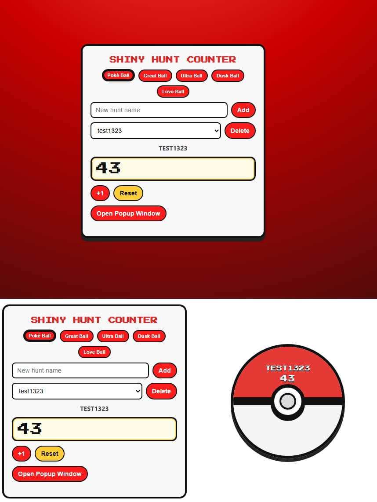
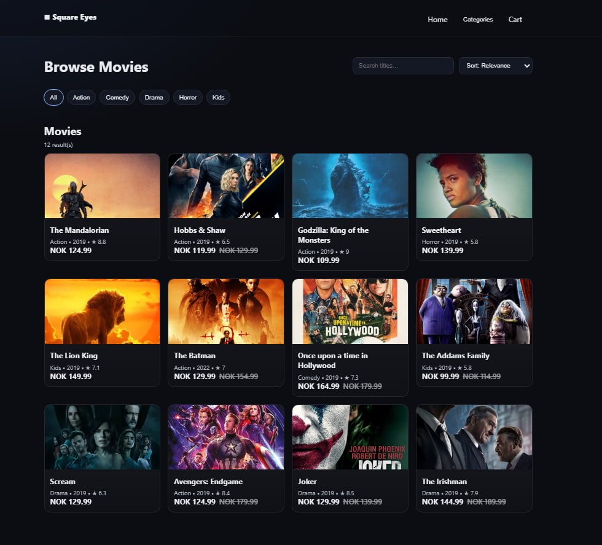
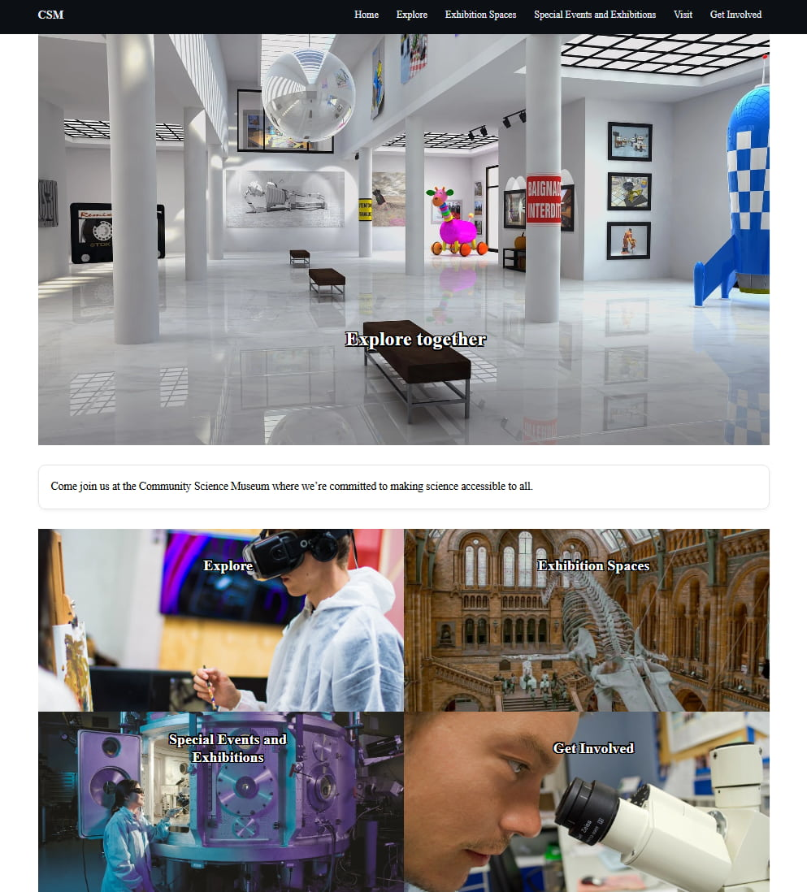
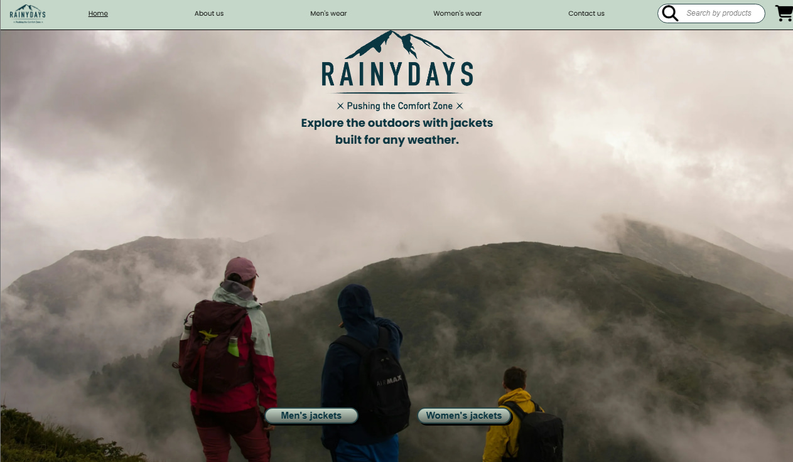

Ole Håvard Furuseth Bergan
Frontend • React / Next.js • Tailwind • JavaScript / TypeScript
Projects
OleKoder Blogg

Personal blog with clean typography, categories, and a focused reading experience.
KapBot

A bot project focusing on reliability, clean commands, and easy configuration.
Shiny Hunter Counter

A small utility to track hunts, sessions, and milestones with minimal friction.
Square Eyes

Video store concept with browsing, product pages, and a polished checkout flow.
Community Science Museum

Informational site with clear IA, accessible components, and modern layout.
RainyDays

Jacket shop concept with strong visual hierarchy and focused product storytelling.
Experience
Noroff
March 2025 ->
I wanted to enhance my skillset as a developer and go back to the core. I realised there is alot more to learn and found out the best way to become the best possible developer I can is to go back to school. So here I am working on my degree.
Skavl Media AS
20.03.24 - 28.06.24
At Skavl Media AS I was tasked to rewrite the entire CSS of a newspaper called Midtsiden. I changed it from React Components over to Tailwind CSS. Here I used a techstack of NextJS, TypeScript, Tailwind and got taught the propper way of utilizing AI.
Kodeverket Bergen
28.10.22 - 31.05.23
In my internship at Kodeverket Bergen I was techlead. This is a startup made my Kodehode. I was responsible to teach the new intern the techstack we used. I was a big part of the onboarding, I made tasks for potentiall new interns, and I was the one responsible for fixing errors.
Bjørnafjorden Næringsråd
20.09.22 - 31.10.22
At Bjørnagjorden Næringsråd I was a intern with the task to recreate the homepage they had in WIX.
Octaos
20.06.22 - 22.09.22
My first internship was at Octaos. Here I was challanged on thinking in a new way. I was working with React, FireBase and Google Maps. My task was pretty much to use FireBase as a BaaS to create something simular to a CMS, and use google maps to create a overview over customers location. This also worked with a /admin url on the webpage for editing.
Kodehode
06.01.22 - 06.02.23
In january 2022 I started my journey as a webdeveloper and took a 1 year course. Here I got experience in HTML, CSS, JavaScript and ReactJS.
Techstack
Over the years I have accuired myself a pretty solid tech stack.
- Semantic HTML
- WCAG certifiticate
- CSS
- Tailwind
- SASS
- JavaScript
- TypeScript
- ReactJS
- NextJS
- i18next
- Sanity
- FireBase
- Wordpress
- WIX
- Python
- Docker
- Postgress SQL
About me
I am a very social person. I love to travel, learn new stuff and experience life to the fullest. I also do alot of volenteering.
Some of my hobbies
I love to travel. In the last year I've traveled to Singapore twice.
Games is something I do enjoy. I love videogames, boardgames and cardgames. One of my guilty pleasures is Pokémon TCG and I have a active collection I am increasing.
Volenteering
Since 2019 volenteering has been a huge part of my life. I started voulenteering at a nursing home, a open kindergarden and a intergration activity in october/november 2019. I did all three activities until Norway got closed down due to the pandemic and voulenteering took a big hit. After it opened up again I only stuck with Folkevenn, the intergration activity. I have since then also become a member, and a boardmember, of Norsk Folkehjelp Solidaritetsungdom Bergen, and have in the recent years been the financial advisor for the youth team of Norsk Folkehjelp in Bergen. Since 2025 I also became the leader for Folkevenn, and I was sitting on the board for feminism and anti racism at Norsk Folkehjelp Solidaritetsundom national wide.